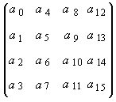

title: glMultMatrixf function (Gl.h) description: The glMultMatrixf function multiplies the current matrix by an arbitrary matrix. | glMultMatrixf function (Gl.h) ms.assetid: fea5e557-09bd-4c45-89cc-9f3739b577bb keywords:
The glMultMatrixd and glMultMatrixf functions multiply the current matrix by an arbitrary matrix.
void WINAPI glMultMatrixf(
const GLfloat *m
);
m
A pointer to a 4x4 matrix stored in column-major order as 16 consecutive values.
This function does not return a value.
The following error code can be retrieved by the glGetError function.
| Name | Meaning |
|---|---|
| GL_INVALID_OPERATION | The function was called between a call to glBegin and the corresponding call to glEnd. |
The glMultMatrix function multiplies the current matrix by the one specified in m. That is, if M is the current matrix and T is the matrix passed to glMultMatrix, then M is replaced with M T.
The current matrix is the projection matrix, modelview matrix, or texture matrix, determined by the current matrix mode (see glMatrixMode).
The m parameter points to a 4x4 matrix of single-precision or double-precision floating-point values stored in column-major order. That is, the matrix is stored as shown in the following image.

The following functions retrieve information related to glMultMatrix:
glGet with argument GL_MATRIX_MODE
glGet with argument GL_MODELVIEW_MATRIX
glGet with argument GL_PROJECTION_MATRIX
glGet with argument GL_TEXTURE_MATRIX
| Requirement | Value |
|---|---|
| Minimum supported client | Windows 2000 Professional [desktop apps only] |
| Minimum supported server | Windows 2000 Server [desktop apps only] |
| Header | Gl.h |
| Library | Opengl32.lib |
| DLL | Opengl32.dll |